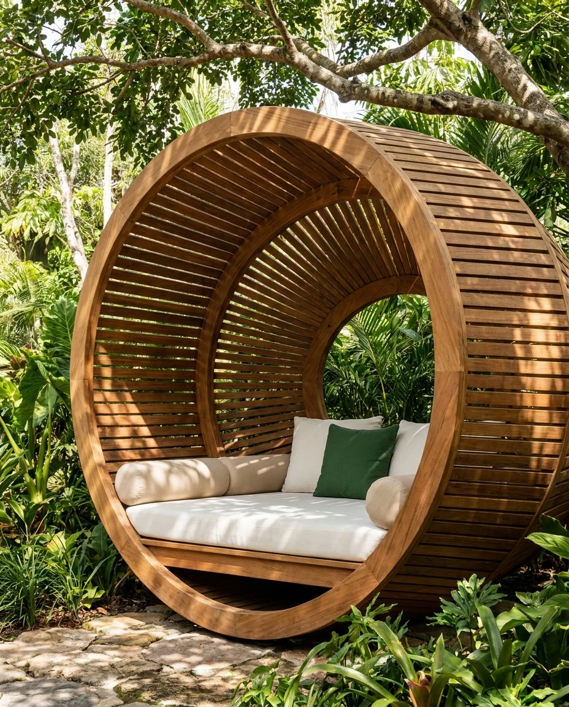
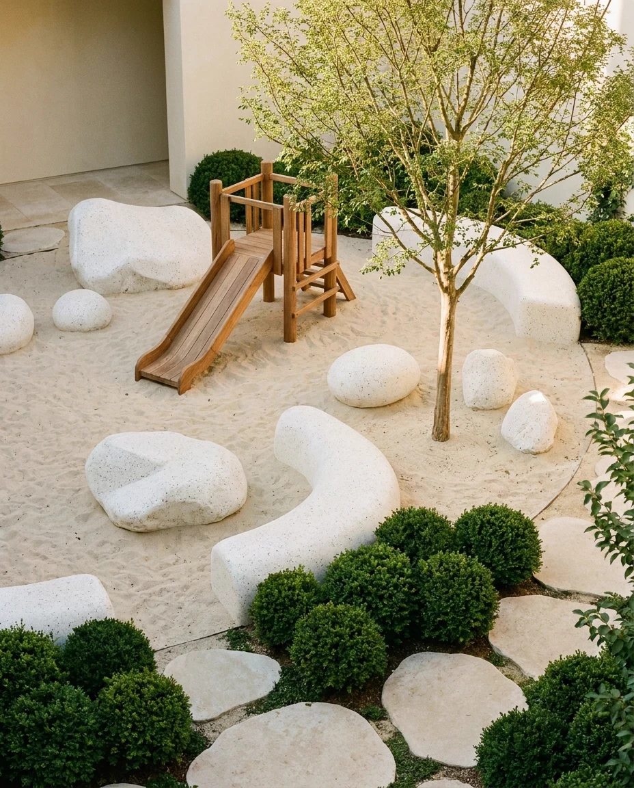

Sit down to read
under ivy-covered awning
Bring the little ones
to a landscaped
playground
Meditate on our softest
lawns
Springs creates a mosaic
of beautiful reality.

Permanent outdoor recreation spaces

Video-monitored playgrounds
Portable outdoor furniture